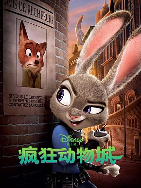

简介：
主角是一个年仅7岁名叫Tim的男孩，他发现他的婴儿弟弟并不像他表面看起来那样无辜单纯，于是兄弟二人开始展开了一场父母之爱争夺战。
简介：
世界存亡危在旦夕，“信条”一词是惟一的线索与武器。主人公穿梭于全球各地，开展特工活动，力求揭示“信条”之谜，并完成一项超越了真实时间的神秘任务。这项任务并非时间之旅，而是“时空逆转”。

简介：
故事发生在一个所有哺乳类动物和谐共存的美好世界中，兔子朱迪从小就梦想着能够成为一名惩恶扬善的刑警，凭借着智慧和努力，朱迪成功的从警校中毕业进入了疯狂动物城警察局，殊不知这里是大型肉食类动物的领地，作为第一只，也是唯一的小型食草类动物，朱迪会遇到怎样的故事呢？